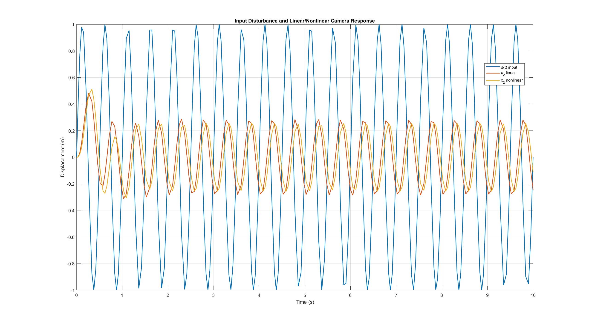
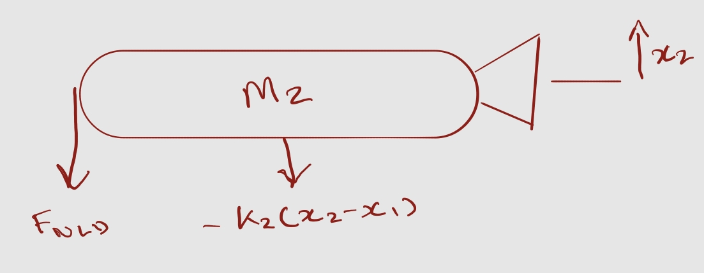
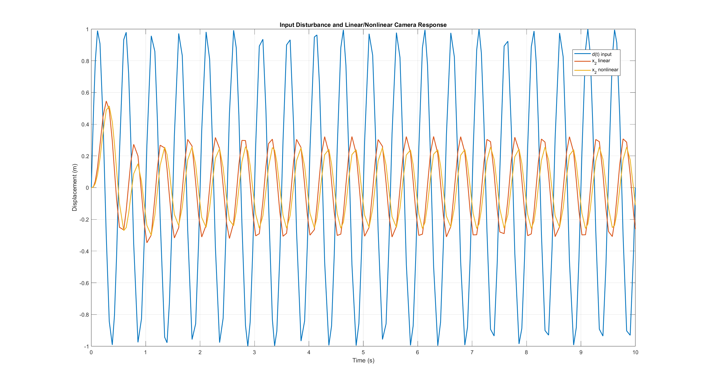

Academic project · Dynamics and controls
SteadyCam dynamic-system model.
Linear and nonlinear models of a two-degree-of-freedom camera isolation system, with a parameter change evaluated in MATLAB and Simulink.

- Model
- 2 degrees of freedom
- Methods
- Linear · nonlinear
- Tools
- MATLAB · Simulink
- Input
- Hand-motion disturbance
01 · Model development
Camera and platform equations of motion.
The system was represented with separate camera and platform coordinates. I derived the equations of motion and implemented both linear and nonlinear versions to compare their predicted responses.
The analysis used time-domain simulation and state-space methods to evaluate how the isolation system transmitted the hand-motion input to the camera.


02 · Parameter study
Reduced isolator stiffness.
One stiffness value was reduced and the response was recalculated. The peak transmission ratio decreased from 0.5460 to 0.4820.
11.7% lower peak transmission ratioThis result applies to the tested stiffness change. It was not an optimization study.